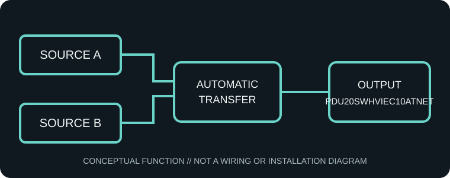

[ AUTOMATIC TRANSFER SWITCH // IDENTIFIED SKU ]
CyberPower PDU20SWHVIEC10ATNET Switched ATS PDU
A 200–240 V, single-phase network-managed rack ATS PDU with IEC output connectors. Dual-source transfer supports compatible single-cord devices; source quality and available capacity determine continuity.

ARCHIVAL IDENTIFICATION: Record complete model suffix, region, serial/date code, firmware/revision, input-cord configuration and installed options. Do not infer electrical equivalence from a shared product-family name.
Exact model specifications
| Catalog category / topology | Power protection — dual-source automatic transfer switch and rack power distribution. |
|---|---|
| Input feeds / voltage / current | Two IEC 60320 C20 input connections; 200–240 V AC single phase, 20 A class. Verify the input cord and continuous-load limit for the regional SKU. |
| Phases / frequency | Single phase, 50/60 Hz where supported by the exact regional configuration; verify the manufacturer nameplate. Never connect incompatible or unsynchronized building supplies unless explicitly allowed by the manufacturer's instructions. |
| Output receptacles / connectors | 8 × IEC 60320 C13 and 2 × IEC 60320 C19 receptacles; 200–240 V single phase. |
| Switching and transfer behavior | Automatically switches the load between source A and source B when the preferred source is absent or outside acceptable limits; source priority, threshold, transfer time and return/retransfer behavior are model/configuration specific and must be taken from the cited manual. No battery is present, so the ATS cannot provide outage runtime. |
| Network / metering | Network monitoring and remote outlet control, with local display/status; supported protocols and telemetry are revision-specific and listed in the manufacturer data sheet. |
| Rack form / mounting | Rack-mount power distribution/transfer unit; 1U horizontal rack form where specified for this model. Confirm rack depth, mounting hardware and airflow clearance in the installation guide. |
| Host compatibility | Designed for compatible single-cord equipment within the source voltage, frequency, current, output connector and transfer-time limits. Verify PSU input range and ride-through tolerance. Loads with dual power supplies should generally use independently sourced feeds as directed by their manufacturer; this ATS is not a substitute for an approved redundant-power design. |
| Electrical safety | Use only correctly rated, grounded sources and manufacturer-approved cords; keep A/B feeds within specified voltage/phase/current. Do not exceed branch, aggregate, or per-outlet limits; do not daisy-chain. Disconnect both feeds before service. Do not open energized equipment. Have hardwired models installed by qualified personnel under applicable electrical codes and confirm required overcurrent protection/certification for the region. |
Use and archival notes
- Automatic transfer preserves power only when the alternate source is present and compatible; it does not store energy.
- Record both source identities, measured voltages, load, transfer settings, network-card revision and observed transfer test results separately from manufacturer specifications.
- Keep the chassis, plugs and receptacles dry and unobstructed. Remove from service if cords, grounding, contacts or enclosure show damage, overheating or arcing.
- Follow the exact manufacturer installation and safety instructions; this archive is not an electrical design or installation guide.
Manufacturer manuals and datasheets
- PDU20SWHVIEC10ATNET datasheetManufacturer documentation; confirm the regional SKU and revision printed on the equipment.
- CyberPower Intelligent PDU/ATS User GuideManufacturer instructions for ATS/PDU installation, setup and use.
- Manufacturer product specification and model listingProduct-family page used to cross-check the exact SKU and regional model details.